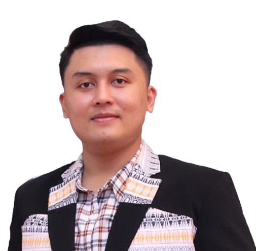
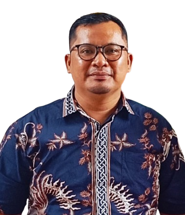
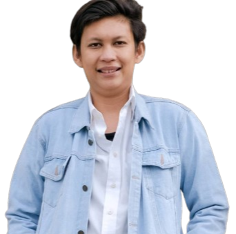
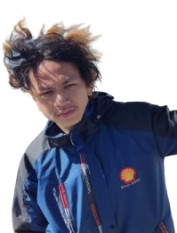

Total Anggota
10
Ketua
1
Perencanaan
3
Pengadaan
2
Pemeliharaan
3
Inventaris
1
Pimpinan

Ketua Sarana & Prasarana
Anderson Sianturi
GKPI Jemaat Khusus Depok
Sub Bagian Perencanaan
Sub Bagian Perencanaan3 Anggota
Chandra Sitepu
Perencanaan

Landong Sihombing
Perencanaan

Jonathan Silaen
Perencanaan
Sub Bagian Pengadaan
Sub Bagian Pengadaan2 Anggota
Pnt. Mangerbang Siregar
Pengadaan
Andreas Simbolon
Pengadaan
Sub Bagian Pemeliharaan
Sub Bagian Pemeliharaan3 Anggota
Pnt. Lambok Situmorang
Pemeliharaan
Ruben Siburian
Pemeliharaan

John Purba
Pemeliharaan
Sub Bagian Inventaris
Sub Bagian Inventaris1 Anggota
Wahyu Rohmani
Inventaris
Daftar Anggota
| Jabatan | Urutan | Nama |
|---|---|---|
| Ketua Sarpras | 1 | Anderson Sianturi |
| Sub Bagian Perencanaan | 1 | Chandra Sitepu |
| Sub Bagian Perencanaan | 2 | Landong Sihombing |
| Sub Bagian Perencanaan | 3 | Jonathan Silaen |
| Sub Bagian Pengadaan | 1 | Pnt. Mangerbang Siregar |
| Sub Bagian Pengadaan | 2 | Andreas Simbolon |
| Sub Bagian Pemeliharaan | 1 | Pnt. Lambok Situmorang |
| Sub Bagian Pemeliharaan | 2 | Ruben Siburian |
| Sub Bagian Pemeliharaan | 3 | John Purba |
| Sub Bagian Inventaris | 1 | Wahyu Rohmani |